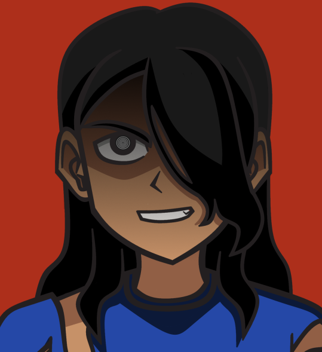

| Nom | Alphonse Baker |
| Naissance | 22 mars 1983 |
| Espèce | Humain |
| Sexe | Masculin |
| Taille | 182 cm |
| Poids | 75 kg |
| Profession | Militaire |
| Débuts | Corruption Stone, Chapitre 1 (mentionné) Corruption Stone, Chapitre 15 (flashback) |
| Statut | [Spoiler] |
 |
Emilie (épouse) |
|
Aiden (fils) |
|  | Ace (ancien meilleur ami) |
Accueil / Personnages / Alphonse
Alphonse Baker est un personnage secondaire de Despaired Future : Corruption Stone.
Alphonse Baker est le père d'Aiden Baker et le mari d'Emilie Baker
Il était militaire dans le même régiment qu'Achill Von Wunderbar, à l'époque stagiaire.
Prends soin de toi… Aiden…
Alphonse Baker (Corruption Stone, Chapitre 16)
Comme le reste des humains améliorés, Alphonse a obtenu une force et une résistance accrue après avoir touché la pierre de la Corruption. S'il n'est pas forcément possible de calculer ce gain, on estime que la force serait multipliée par deux, voire trois, et que la résistance du corps serait quant à elle multipliée par cinq.
Comme son fils Aiden, la constellation du Lézard offre à Alphonse l'utilisation de tentacules, prenant source dans son dos. Ses tentacules peuvent s'étendre sur un ou deux mètres devant lui. Bien que visibles et touchables, il ne sont pas composés de chairs, mais sont seulement la matérialisation de l'énergie et de l'âme d'Alphonse.